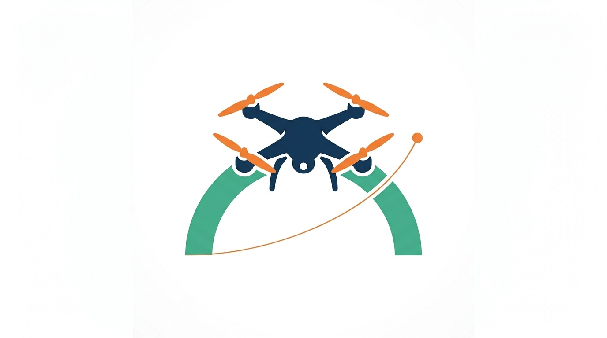

arch_nav
Platform-agnostic UAV navigation kernel
What is arch_nav¶
arch_nav is a navigation kernel that decouples UAV application logic from the underlying autopilot. It provides a single API that works across PX4, ArduPilot, or any autopilot for which a driver plugin exists. Applications built on arch_nav can switch autopilot stacks without rewriting navigation code.
Development¶
- Build & Test — How to build the library, run tests, and integrate in your project.
- Writing Drivers — Step-by-step guide to implementing a driver for a new autopilot.
- Concurrency Notes — Threading model and synchronization guarantees.
Who is this for¶
- Drone developers who need a clean abstraction over different autopilot stacks.
- Research groups building experimental navigation and planning systems without being locked to a single platform.
- Companies that develop and maintain robust UAV control software across multiple vehicle platforms.
Getting Started¶
- Installation — Dependencies and build instructions.
- First Run — A minimal mission flow from arm to waypoint following.
Citing this tool¶
@software{dominguez2025archnav,
author = {Dominguez, Manuel},
title = {arch\_nav: A Platform-Agnostic UAV Navigation Kernel},
year = {2025},
url = {https://github.com/mdominmo/arch-nav}
}
Created by Manuel Dominguez